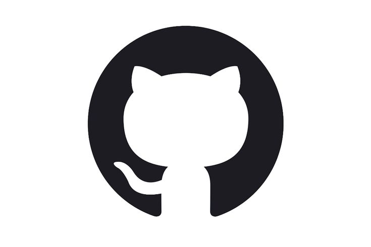

" Качественно. Быстро. Дорого."
Александр Николавич Гусев
Программирование
Мои проекты
Моё образование
Обо мне
Не только работа
Мои проекты
Тут будут мои проекты
Моё образование
Мои дипломы
Обо мне
Жизнь помимо работы
Не только работа
Тут будут классные картинки